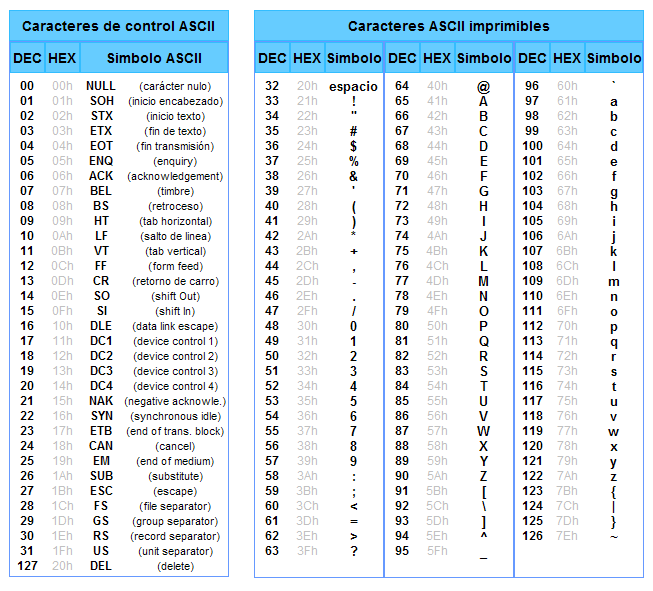
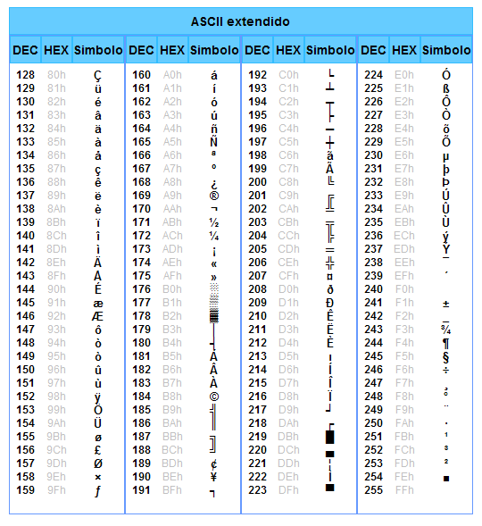
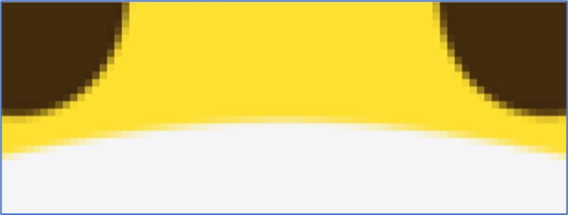

Codificación de datos
Los datos se transforman en un formato legible para las computadoras a través de diversos esquemas de codificación, tales como ASCII, Unicode, y formatos de archivos de imagen y audio como JPEG, PNG, MP3, WAV, entre otros.
Cada tipo de dato se asocia con una codificación específica que determina su representación en formato binario y su almacenamiento en archivos o en la memoria del sistema informático.
Por ejemplo, así como los números son patrones binarios de unos y ceros, ¡las letras también se representan usando unos y ceros!
Para representar letras, todo lo que tenemos que hacer es decidir cómo se asocia una letra específica a un número específico.
Codificación de caracteres
Para representar letras, números y símbolos se utilizan diferentes esquemas de codificación de caracteres, como ASCII, Unicode, UTF-8 o UTF-16, que asignan valores numéricos a cada carácter para su representación en binario.
Código ASCII
ASCII (se pronuncia "asqui") o American Standard Code for Information Interchange es una codificación de caracteres de texto que asigna un número único a cada letra, dígito y símbolo comúnmente utilizado en inglés y otros idiomas. Esta asignación se denomina mapeo de caracteres.
Conoce la historia de ASCII
El código ASCII fue creado en 1963 por el Comité Estadounidense de Estándares o "ASA". Este organismo cambio su nombre en 1969 por "Instituto Estadounidense de Estándares Nacionales" o "ANSI" como se lo conoce desde entonces.
Este código nació a partir de reordenar y expandir el conjunto de símbolos y caracteres ya utilizados en aquel momento en telegrafía por la compañía Bell. En un primer momento solo incluía letras mayúsculas y números, pero en 1967 se agregaron las letras minúsculas y algunos caracteres de control, formando así lo que se conoce como US-ASCII, es decir los caracteres del 0 al 127.
Así con este conjunto de solo 128 caracteres fue publicado en 1967 como estándar, conteniendo todos lo necesario para escribir en idioma ingles.

En el código ASCII, la letra A es el código 1000001 cuyo valor es 65, la B es el código 1000010 cuyo valor es 66, y así sucesivamente.
Si tomamos de ejemplo la A, al usar su código en diferentes contextos, diferentes programas pueden interpretar y mostrar esta combinación de ceros y unos como si representasen al valor numérico 65 como así también al caracter A.
Veamos otro ejemplo. Cuando recibimos un mensaje de texto, mapeando en ASCII, obtenemos 3 patrones de bits que tienen los valores decimales 72, 73 y 33.
Esos patrones se asignarían a los caracteres HI! y las secuencias de bits se verían como 01001000, 01001001 y 00100001, 8 bits (1 byte) para cada carácter:
Si te fijas bien, las cadenas binarias del ejemplo anterior poseen 8 bits cada una, aunque los los bits más significativos (más a la izquierda) son ceros, es decir, son sin valor. ¿Sabes por qué se agregan esos bits si no modifican el valor representado por cada cadena de bits?
Bit
Byte
Código ASCII extendido
Conoce la historia de ASCII extendido
En 1981, la empresa IBM desarrolló una extensión de 8 bits del código ASCII, llamada "pagina de código 437". En esta versión se reemplazaron algunos caracteres de control obsoletos, por caracteres gráficos. Además se incorporaron 128 caracteres nuevos, con símbolos, signos, gráficos adicionales y letras latinas, necesarias para la escrituras de textos en otros idiomas, como por ejemplo el español. Así fue como se sumaron los caracteres que van del ASCII 128 al 255.
IBM incluyó soporte a esta página de código en el hardware de su modelo 5150, conocido como "IBM-PC", considerada la primera computadora personal. El sistema operativo de este modelo, el "MS-DOS" también utilizaba el código ASCII extendido.

Casi todos los sistemas informáticos de la actualidad utilizan el código ASCII para representar caracteres, símbolos, signos y textos
Para tener en cuenta
La representación binaria tiene el bit más significativo primero (“big endian”). Aunque no entiendas por ahora que significa esto, lo que tienes que saber es que ASCII es de 7 bits.
Debido a que muchos han llamado codificaciones como CP437, ISO-8859-1, CP-1252 y otras "ASCII extendido", algunas personas tienen la idea errónea de que ASCII es de 8 bits (1 byte).
Código ALT
El código ALT se refiere a una serie de códigos que puedes ingresar utilizando el teclado de tu computadora para generar caracteres especiales que no se encuentran en el teclado estándar. Estos códigos se ingresan manteniendo presionada la tecla ALT y luego escribiendo una serie de números en el teclado numérico.
Por ejemplo, si mantienes presionada la tecla ALT y luego escribes 64 en el teclado numérico, cuando sueltes la tecla ALT, se generará el carácter "@".
Es importante mencionar que no todos los códigos ALT corresponden a caracteres en el código ASCII. Algunos códigos ALT pueden generar caracteres que están fuera del conjunto de caracteres ASCII estándar.
Para conocer el código ALT correspondiente al símbolo que estás buscando te invito a que visites la página web de referencia haciendo clic aquí.
Código Unicode
Unicode es una codificación de caracteres más amplia que puede representar caracteres de muchos idiomas y símbolos especiales de manera consistente en todas las plataformas informáticas.
Unicode utiliza 16 bits para representar cada carácter, lo que permite un rango mucho más amplio de caracteres que ASCII.
El 12 de septiembre de 2023 fue lanzada la versión 15.1.0. Casi medio millón de símbolos de todo tipo, incluyendo flechas, signos matemáticos, emojis, jeroglíficos y antiguos escritos, están disponibles.
Como esta es muchísima información para poder ser visualizada aquí, te invito a que visites la página web de referencia haciendo clic aquí.
Codificación de emojis
A medida que pasa el tiempo, hay más y más formas de comunicarse a través de mensajes de texto.
Dado que no había suficientes dígitos en binario para representar todos los diversos caracteres que podían representar los humanos, el estándar Unicode amplió la cantidad de bits que las computadoras pueden transmitir y comprender.
Cuando recibimos un emoji , nuestra computadora en realidad solo recibe un número en binario que luego asigna a la imagen del emoji según el estándar Unicode.
Por ejemplo, el emoji de “cara con mascarilla médica” tiene solo cuatro bytes:

Hay emojis que probablemente uses todos los días, como los que están aquí representados.
Los informáticos se enfrentaron a un desafío al querer asignar varios tonos de piel a cada emoji para permitir que la comunicación se personalizara aún más. En este caso, los creadores y colaboradores de los emojis decidieron que las partes iniciales serían la estructura del emoji en sí, seguida del tono de la piel.
Cada vez se agregan más funciones al estándar Unicode para representar más caracteres y emojis.
Y resulta que las diferentes empresas que crean software para sus dispositivos tendrán imágenes ligeramente diferentes que representan cada emoji, ya que solo se han estandarizado las descripciones.
Como esta es muchísima información para poder ser visualizada aquí, te invito a que visites la página web de referencia haciendo clic aquí.
También puedes conocer más de los Emoji haciendo clic aquí
Codificación de Imágenes
Las imágenes se pueden codificar utilizando diferentes formatos de archivo, como JPEG, PNG, GIF, BMP, entre otros.
Cada formato utiliza algoritmos de compresión específicos para almacenar la información de la imagen de manera eficiente, reduciendo el tamaño del archivo sin perder demasiada calidad perceptible.
Pero, ¿cómo es posible?
Con las cadenas de bits, también podemos asignar números a colores. Hay muchos sistemas diferentes para representar los colores, pero el sistema más conocido es RGB, que representa la cantidad de rojo, verde y azul que componen a un color específico:

Por ejemplo, nuestro patrón de bits anterior, 72, 73 y 33, que decía HI! a través de texto, indicaría la cantidad de rojo (72), verde (73) y azul (33) en un color. Y nuestros programas sabrían que esos bits se asignan a un color (lo interpretarían como un tono claro de amarillo) si abriéramos un archivo de imagen, en lugar de recibirlos en un mensaje de texto:

Los puntos en nuestras pantallas se denominan píxeles, y las imágenes también se componen de muchos miles o millones de esos píxeles.
Entonces, al usar tres bytes para representar el color de cada píxel, podemos crear imágenes.
Podemos ver píxeles en un emoji si hacemos zoom, por ejemplo:

Las imágenes son simplemente colecciones de valores RGB.
Codificación de video
Los videos son secuencias de muchas imágenes, que cambian varias veces por segundo para darnos la apariencia de movimiento, como lo haría un flipbook.
Codificación de Sonido
La música también se puede representar con bits. MIDI es uno de esos formatos que representa la música con números para cada una de las notas, su duración y volumen.
Puedes saber más sobre el estándar MIDI hacindo clic aquí
Además, el sonido se puede codificar utilizando diferentes formatos de archivo de audio, como MP3, WAV, AAC, etc.
Cada formato utiliza algoritmos de compresión específicos para representar el sonido de manera eficiente, eliminando redundancias y manteniendo la calidad auditiva dentro de límites aceptables.
Conclusiones (depurar)
En resumen, los sistemas de numeración y codificación son conceptos esenciales en la informática que permiten representar y manipular datos de manera efectiva en formato digital, lo que facilita su almacenamiento, procesamiento y transmisión.
En los sistemas informáticos existen varios tipos de datos y cada uno tiene su propia forma de representación. Así, los datos se representan y almacenan de varias maneras, dependiendo del tipo de dato y de la arquitectura del sistema.
Esta codificación es esencial para garantizar que los datos sean interpretados y procesados de manera precisa por las aplicaciones de software y los dispositivos periféricos.
El sistema unario es un sistema de numeración que emplea un único símbolo, como una barra o un punto, para representar el valor “uno”. Los demás números se expresan mediante la repetición de este símbolo.
El sistema decimal es un sistema de numeración que utiliza diez símbolos distintos, conocidos como dígitos, para representar cualquier valor. Estos dígitos son el 0, 1, 2, 3, 4, 5, 6, 7, 8 y 9.
Las computadoras utilizan el sistema binario, con solo dos dígitos, 0 (apagado) y 1 (encendido). Cada dígito binario se llama bit (binary digit) y es la mínima unidad de información.
Además, generalmente usan ocho bits para representar un número. Por ejemplo, el código binario 00000101 es el número 5 en decimal. Estos ocho bits se denominan byte, conocido como la mínima unidad de palabra.
Así como los números son patrones binarios de unos y ceros, ¡las letras también se representan usando unos y ceros!
El mapeo estándar, llamado código ASCII o estándar ASCII, se creó para asignar caracteres específicos (letras mayúsculas y minúsculas, números, puntuación y símbolos) a números específicos. Con 8 bits, o 1 byte, podemos tener 28 = 256 valores diferentes (desde 0 hasta 255, el valor más alto que se puede formar con 8 bits).
Sin embargo, dado que no había suficientes dígitos en binario para representar todos los diversos caracteres que podían representar los humanos, el estándar Unicode amplió la cantidad de bits que las computadoras pueden transmitir y comprender.
Cuando recibimos un emoji , nuestra computadora en realidad solo recibe un número en binario que luego asigna a la imagen del emoji según el estándar Unicode.
Con bits, también podemos asignar números a colores. Hay muchos sistemas diferentes para representar los colores, pero el sistema más conocido es RGB, que representa la cantidad de rojo, verde y azul que componen a un color específico.
Las imágenes son simplemente colecciones de valores RGB.
Los videos son secuencias de muchas imágenes, que cambian varias veces por segundo para darnos la apariencia de movimiento.
La música también se puede representar con bits. MIDI es uno de esos formatos que representa la música con números para cada una de las notas y su duración y volumen.
Todas estas ideas son solo ceros y unos, interpretadas y utilizadas por el software que hemos escrito para interpretarlas de la manera que queremos.
Hay otros formatos, algunos de los cuales usan compresión (formas matemáticas de representar algunos datos con menos bits), o algunos que pueden ser contenedores que almacenan varios tipos de dato juntos.
Y dado que hay muchas empresas y grupos que desarrollan software, existen muchos formatos de archivo diferentes, cada uno con sus propias formas de representar los datos. Pero también hay organizaciones que trabajan sobre cierto consenso, como la encargada de mantener el estándar Unicode.
Ejercicios
-
¿Podrías decir que dice la siguiente codificación según el código ASCII?
01000101 01010011 01010100 01001111 00100000 01000101 01010011 00100000 01001101 01010101 01011001 00100000 01000110 01000001 01000011 01001001 01001100Ver solución
Aquí está la conversión de cada byte a su carácter correspondiente en ASCII:
01000101: E (69 en decimal) 01010011: S (83 en decimal) 01010100: T (84 en decimal) 01001111: O (79 en decimal) 00100000: (espacio) (32 en decimal) 01000101: E (69 en decimal) 01010011: S (83 en decimal) 00100000: (espacio) (32 en decimal) 01001101: M (77 en decimal) 01010101: U (85 en decimal) 01011001: Y (89 en decimal) 00100000: (espacio) (32 en decimal) 01000110: F (70 en decimal) 01000001: A (65 en decimal) 01000011: C (67 en decimal) 01001001: I (73 en decimal) 01001100: L (76 en decimal)
Esta codificación es una serie de bytes en binario. Cada byte representa un carácter en la codificación ASCII.
Por lo tanto, la cadena de bytes en binario se traduce a "ESTO ES MUY FÁCIL" en ASCII.